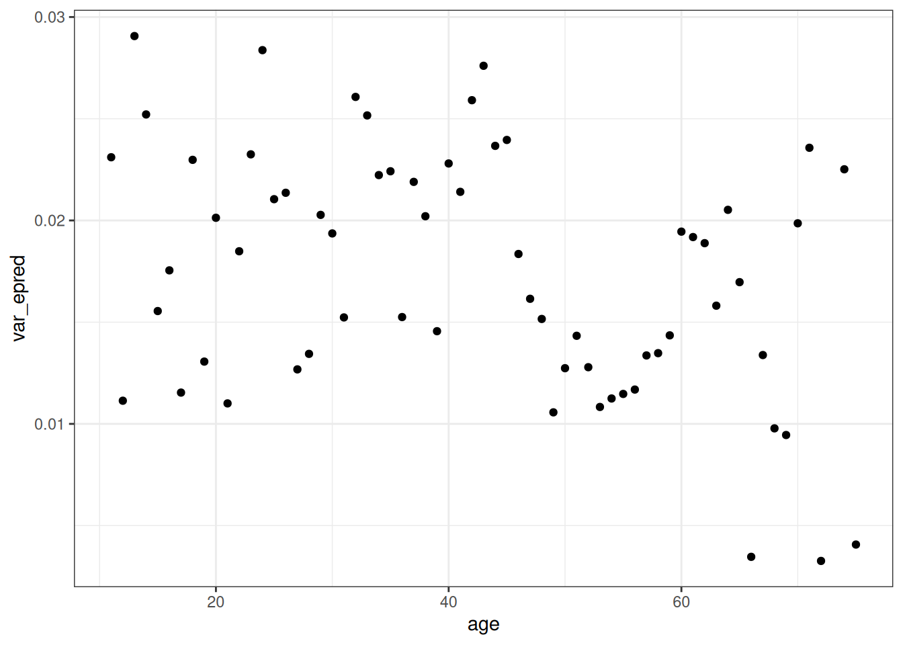

source('R/packages.R')Homework 09
Data
The data in data(Achehunting) are 14,364 individual hunting trips by 147 men among the indigenous Aché of Paraguay. Each trip has recorded the hunter’s identity (anonymized id), hunter’s age at the time of the trip, the duration in hours of the trip, and the kilograms of meat returned. Many of the trips have missing values for duration.
# Data
source('R/data_achehunting.R')
# month : Month of record
# day : Day of record
# year : Year of record
# id : Identifier of individual man
# age : Man's age at time of record
# kg.meat : Kilograms of meat returned from hunt
# hours : Duration in hours of hunting trip
# datatype : 1 if duration of trip known, 3 otherwise
DT_hunting <- data_achehunting()Question 1
- In this first problem, estimate the influence of age on the probability of trip success. Define “success” as a trip that returns any non-zero amount of meat. Ignore individual hunter identities for now. You can use any functional relationship for age and success that you think is sensible, but be sure to justify it and check it against posterior predictions.
coords <- data.frame(
name = c('S', 'A'),
x = c(1, 2),
y = c(0, 1)
)
dagify(
S ~ A,
coords = coords
) |> ggdag(seed = 2) + theme_dag()Functional relationship
First, fit with a log base 10 line.
range_age <- data.table(
age = seq(min(DT_hunting$age), max(DT_hunting$age))
)
ggplot(DT_hunting[, .(prob_success = sum(success) / .N), age],
aes(x = age, prob_success)) +
geom_point() +
stat_function(fun = function(x) -1 + log10(x)) +
labs(x = 'Age', y = 'Probability of success')Short of more background on these data, I am going to take it as practice fitting a GAM with brms (through mgcv).
Priors
get_prior(success ~ s(age), family = 'binomial', data = DT_hunting) prior class coef group resp dpar nlpar lb ub source
(flat) b default
(flat) b sage_1 (vectorized)
student_t(3, 0, 2.5) Intercept default
student_t(3, 0, 2.5) sds 0 default
student_t(3, 0, 2.5) sds s(age) 0 (vectorized)Recall: predicted draws returns posterior predictions on the scale of the response (0, 1), epred draws returns posterior predictions with the inverse transformation.
tar_load(m_h09_q01_prior)
m_h09_q01_prior$prior prior class coef group resp dpar nlpar lb ub source
normal(0, 0.5) b user
normal(0, 0.5) b sage_1 (vectorized)
normal(0, 1.5) Intercept user
exponential(1) sds 0 user
exponential(1) sds s(age) 0 (vectorized)pred_q01_prior <- add_predicted_draws(range_age, m_h09_q01_prior)
table(pred_q01_prior$.prediction)
0 1
32198 32802 epred_q01_prior <- add_epred_draws(range_age, m_h09_q01_prior)
range(epred_q01_prior$.epred)[1] 0.0007812558 0.9999527929ggplot(epred_q01_prior) +
stat_lineribbon(aes(age, .epred)) +
ylim(0, 1) +
scale_fill_grey(start = 0.8, end = 0.4) +
labs(x = 'Age', y = 'Prior probability of success')Posterior
tar_load(m_h09_q01)
m_h09_q01 Family: bernoulli
Links: mu = logit
Formula: success ~ s(age)
Data: DT_hunting (Number of observations: 14364)
Draws: 4 chains, each with iter = 2000; warmup = 1000; thin = 1;
total post-warmup draws = 4000
Smooth Terms:
Estimate Est.Error l-95% CI u-95% CI Rhat Bulk_ESS Tail_ESS
sds(sage_1) 2.85 0.78 1.63 4.67 1.00 1090 1946
Population-Level Effects:
Estimate Est.Error l-95% CI u-95% CI Rhat Bulk_ESS Tail_ESS
Intercept -0.10 0.02 -0.13 -0.06 1.00 3767 2803
sage_1 0.05 0.49 -0.91 1.02 1.00 2427 2725
Draws were sampled using sampling(NUTS). For each parameter, Bulk_ESS
and Tail_ESS are effective sample size measures, and Rhat is the potential
scale reduction factor on split chains (at convergence, Rhat = 1).epred_q01 <- add_epred_draws(range_age, m_h09_q01)
range(epred_q01$.epred)[1] 0.06100912 0.59011762ggplot(epred_q01) +
stat_lineribbon(aes(age, .epred)) +
ylim(0, 1) +
scale_fill_grey(start = 0.8, end = 0.4) +
labs(x = 'Age', y = 'Posterior probability of success') +
geom_point(aes(age, prob_success),
data = DT_hunting[, .(prob_success = sum(success) / .N), age])Question 2
- Now incorporate individual hunter varying effects into your analysis from the previous problem. Allow the influence of age on success to vary by each individual. How much variation in success is explained by individuals and how much by age?
Priors
priors_q02 <- get_prior(success ~ t2(age, by = id), family = 'binomial', data = DT_hunting)
unique(priors_q02$class)[1] "b" "Intercept" "sds" Posterior
tar_load(m_h09_q02)
#m_h09_q02
# m_h09_q02_s_var_id
DT_hunting[, uniqueN(id), age] age V1
<int> <int>
1: 67 6
2: 68 5
3: 62 11
4: 63 9
5: 64 7
6: 56 19
7: 57 19
8: 69 4
9: 70 6
10: 71 5
11: 72 2
12: 74 3
13: 75 2
14: 50 12
15: 48 12
16: 49 11
17: 53 13
18: 65 6
19: 66 4
20: 47 11
21: 51 11
22: 45 17
23: 46 12
24: 59 14
25: 60 10
26: 61 8
27: 44 17
28: 43 15
29: 58 15
30: 41 18
31: 42 16
32: 40 19
33: 39 21
34: 38 24
35: 52 11
36: 54 10
37: 55 11
38: 37 19
39: 33 26
40: 34 26
41: 35 19
42: 32 20
43: 30 19
44: 29 22
45: 31 12
46: 28 14
47: 27 14
48: 26 8
49: 25 12
50: 24 15
51: 23 13
52: 36 13
53: 22 11
54: 21 9
55: 20 12
56: 19 10
57: 18 10
58: 17 9
59: 15 7
60: 16 8
61: 14 10
62: 12 1
63: 13 2
64: 11 1
age V1epred_q02 <- add_epred_draws(unique(DT_hunting[, .(age, id)]), m_h09_q02)
setDT(epred_q02)
var_id <- epred_q02[, .(var_epred = var(.epred)), by = id]
var_age <- epred_q02[, .(var_epred = var(.epred)), by = age]
var_id[, mean(var_epred)][1] 0.009940593var_age[, mean(var_epred)][1] 0.01740102ggplot(var_id, aes(var_epred)) +
stat_halfeye() +
xlim(0, 0.1)ggplot(var_age, aes(var_epred)) +
stat_halfeye() +
xlim(0, 0.1)
ggplot(var_age, aes(age, var_epred)) +
geom_point()
ggplot(var_id[order(var_epred)]) +
geom_point(aes(id, var_epred))ggplot(epred_q02) +
stat_lineribbon(aes(age, .epred)) +
ylim(0, 1) +
scale_fill_grey(start = 0.8, end = 0.4) +
labs(x = 'Age', y = 'Posterior probability of success') +
geom_point(aes(age, prob_success),
data = DT_hunting[, .(prob_success = sum(success) / .N), .(id, age)])Question 3
- Now include trip duration in the model from the previous problem. The focus is still the causal relationship between age and success, but duration is a potential competing cause or a mediator, so it can be useful to include it for either increased efficiency (competing cause) or to study how variation in trip durations mediate differences in hunting returns. Since there are many missing values for trip duration, compare (1) a complete case analysis, which drops all the trips with missing durations, to (2) an analysis which uses all 14,364 trips and imputes missing duration values where necessary. Use any functional relationship between duration and success that you think is sensible, but be sure to justify it and check it against posterior predictions.
imp <- tar_read(DT_hunting_mice)
tar_load(m_h09_q03_mice)
m_h09_q03_mice
mcmc_areas(m_h09_q03_mice, regex_pars = 'sd|b')
conditional_effects(m_h09_q03_mice)